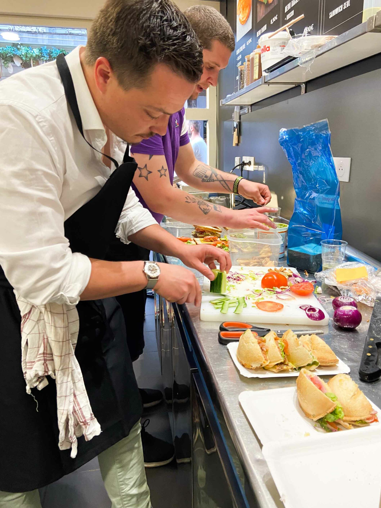

Compose minute
Service rapide
Rouen centre | Mobile first
Choisissez votre base, ajoutez vos ingredients preferes et commandez en quelques clics. L'experience est pensee comme une app mobile: rapide, directe, sans friction.

Compose minute
Service rapide
Commande rapide
Actions en 1 clic
Livraison
Uber Eats & Deliveroo
Le concept
Wrap, panini, pita ou salade: chaque commande est personnalisee selon vos gouts.
Vous choisissez la base qui correspond a votre faim du moment.
Proteines, crudites, fromages, feculents et toppings a combiner.
Sur place, a emporter et livraison selon votre besoin.
Bloc blog
Des conseils rapides pour bien manger meme avec un timing serre.
Choisissez une base, une proteine, des crudites et une sauce pour un repas simple et efficace.
Lire l'articlePanini a composer, wrap minute ou salade XL: trois options selon votre faim et votre planning.
Voir les optionsLe guide rapide pour choisir entre passage au comptoir, appel direct ou commande en livraison.
Lire le guideAction rapide
Le site est optimise mobile-first, type application: acces direct aux actions utiles.